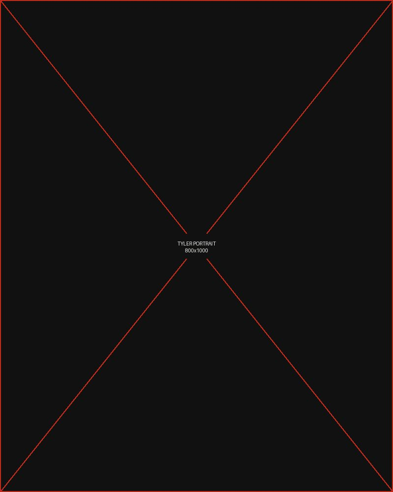

About
Nine years of doing this work.
Three years doing it our way.
Collaboration for Good exists because corporate responsibility is too often designed to be announced rather than to work.

Founder & Principal
Tyler Butler
Tyler Butler has spent more than a decade helping large organizations turn stated values into operating practice. Her client work spans Microsoft, GoDaddy, Lyft, Nissan, Bridgestone, Shell, WebPT, Weedmaps, Aventiv, and Universal Technical Institute.
She founded her first consultancy in 2016 and launched Collaboration for Good in 2023 to focus the practice: fewer engagements, deeper work, and programs built to be measured rather than promoted.
Tyler writes about corporate responsibility as a featured expert contributor to Forbes, Fortune, and Fast Company, and has been recognized by Forbes among its Outstanding Businesswomen. She has served on more than thirty nonprofit and advisory boards across Arizona and nationally.
- Writing
- Forbes · Fortune · Fast Company · U.S. News · InBusiness Phoenix · Green Living
- Recognition
- Forbes Outstanding Businesswomen, 2019
- Service
- 30+ nonprofit and advisory board appointments
- Based in
- Phoenix, Arizona
Approach
How an engagement actually runs
-
Understand the business
Before anything else: what the company makes, who it affects, and where its actual leverage sits. A responsibility program that ignores the operating model is a donation, not a strategy.
-
Find the honest position
Every organization has a defensible place to stand and several indefensible ones. We identify which claims survive contact with an informed critic — and drop the rest.
-
Build the mechanism
Governance, partnerships, budget, ownership, and the internal process that keeps the program running after the launch meeting.
-
Measure and report
Numbers that mean something, reported in a form investors, regulators, and B Lab assessors accept. If it cannot be measured, we say so rather than inventing a metric.
What we hold to
Four commitments
Say the true thing
We will tell a client their program does not work. That is the service. A consultant who only confirms what leadership already believes is an expensive mirror.
Community first, always
The people a program is meant to serve are consulted before it is designed, not surveyed after it launches.
Build it to outlast us
Success is the client running the program without us. Engagements are designed to end.
Hold ourselves to it
Collaboration for Good is pursuing B Corp certification. We publish our own commitments so they can be checked.
Accountability
We are in the middle of our own B Corp assessment.
It would be difficult to advise companies on measurable social responsibility without submitting to the same standard. Collaboration for Good is working through the B Impact Assessment and will publish our score when certification completes.
Watch
Strong businesses are built on strong communities